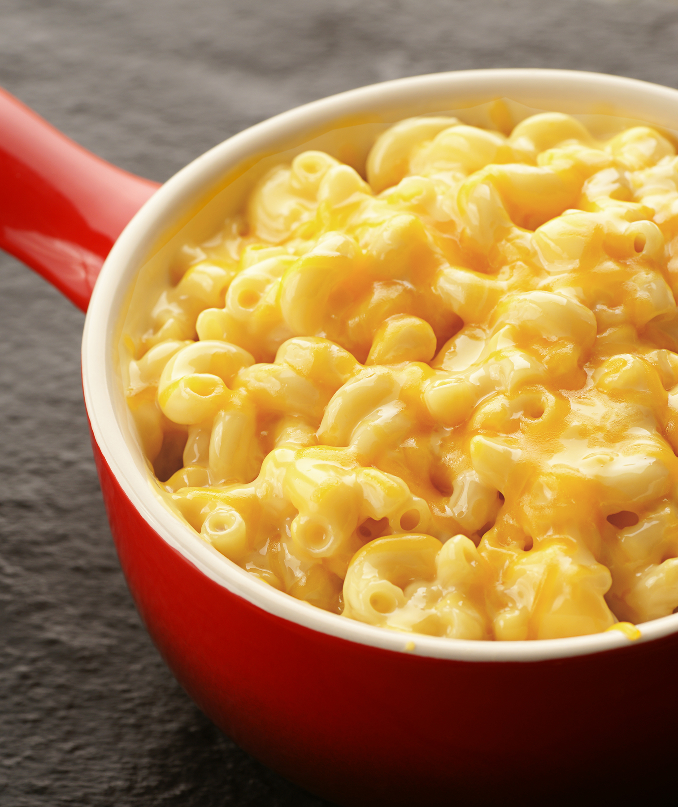

5 Ingredient Mac and Cheese

Description
Ingredients
-
Macaroni
-
Salt
-
Heavy Cream
-
Parmasan
-
Cheddar Cheese
Steps
-
Place the pasta, water, and salt into the base of your Instant Pot. Give it a stir. Lock the lid and cook noodles for 3 minutes using the pressure cook or manual function. Quick release the steam so your noodles don’t overcook.
-
Once there is no more pressure left, open the lid* and mix in the cheeses and heavy cream. Stir until combined and serve.